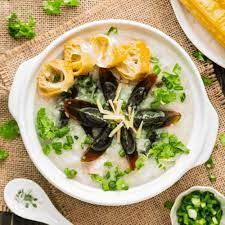

Congee Recipe

Description
Congee or conjee is a type of rice porridge or gruel eaten in Asian countries. When eaten as plain rice congee, it is most often served with side dishes.
Ingredients
- 6 oz rice
- 8 cups water
- 1 tsp salt
- 1 tsp oil
- 3 century egg
- 0.50 lb pork butt
- 1 oz dried scallop
- 0.25 oz ginger
Steps
- Prepare rice and dried scallops
- Heat water and start to cook rice and scallops together
- Prepare pork
- Marinate pork and chop garnishes
- Stir the congee occasionally
- Add the pork and century egg
- Dish is ready to serve, enjoy!